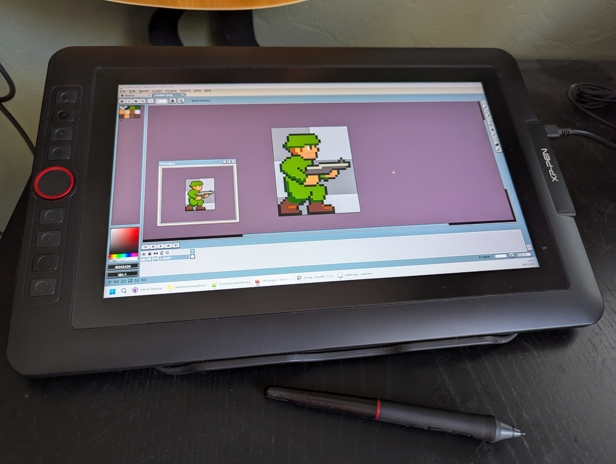
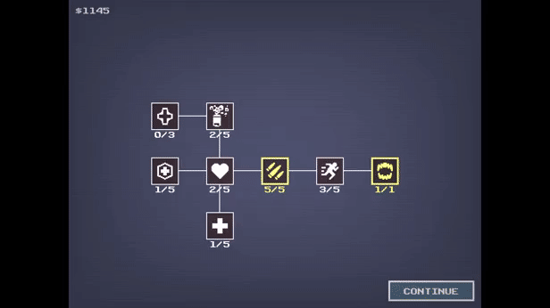

Starting Over Was the Best Decision I Made
July 30, 2026
Sometimes you have to take two steps back, then another step back, just to move one step forward. That doesn't make much sense, but bear with me.
Today I released the first free chapter of Miles Deep on Itch. I've been working on it for about three months now. It's a small demo, but I've learned far more than I expected along the way.
The game takes inspiration from clickers and autobattlers like Nodebuster and Loot Loop, wrapped in a Super Contra/Metal Slug vibe with a healthy dose of Lovecraft. I just can't seem to make a game without some cosmic horror creeping in.

Most of those three months weren't spent designing gameplay, but rather trying to answer a much harder question: how do I make this thing look good enough?
The original plan was ambitious. I'd build 3D environments in Blender and render 2D billboarded sprites inside them. In my head it sounded perfect. I already knew a bit of Blender, I'd draw some NES-style sprites in Aseprite, and everything would magically come together.
There were only two small problems.
- I'm shite at art.
- Those 3D models still need textures, and I'm shite at art.
In my naivety I was imagining something closer to Octopath Traveler (a serious endeavor even for someone with good art skills). It didn't take long to realise I wasn't even remotely close to having the artistic ability to pull that off.
The technical side wasn't helping either. Each character lived inside a Godot SubViewport, rendering a small 2D scene containing sprites, particles, muzzle flashes, and other effects. It worked, but every time I wanted to tweak a character I found myself fighting the editor instead of making progress. There may well have been a better workflow, I just couldn't find it.
The more I struggled with the art, the more obvious it became that I was solving the wrong problem. So I scrapped the whole thing, seven weeks in, and started again. This time in full 2D, baby!

That decision changed everything. I reduced the game's resolution to 320×240 and embraced a much simpler visual style. Suddenly my crude pixel art stopped looking out of place. Of course, that meant redesigning the UI and reworking the controls. More rework, yay.
To save time I also leaned on a couple of excellent asset packs.
The icons came from Free Game Assets, while the scene transitions are from Godot Modular Transitions by Binbun.
It all costed me less than a good burger while saving me a ton of time. Past me might have insisted on building everything myself, current me would rather spend that time making the game better.
One thing that did pay off was reusing systems from previous projects. The upgrade framework from Planet Flipper carried over surprisingly well. Turning it into a proper skill tree, however, was a lot more work than I anticipated. There were plenty of late nights involved, but I now have a flexible system that I'll almost certainly reuse again.
Getting the game running on Itch.io was pleasantly uneventful. Apart from a handful of last-minute bugs, exporting a web build in Godot was quite straightforward. Seeing it run in a mobile browser for the first time was one of those little moments that makes all the frustration worthwhile.

Today adding new content is easier than it's ever been. Characters, skills, buffs, timed effects... the underlying systems are all there. Unsurprisingly, the thing that still takes me the longest is drawing the sprites. But I'm decided to practice more and get better at it. This whole experience made me gain a renewed sense of respect to all pixel artists out there.
At this precise moment in time I sure as hell can't make a beautiful game, but I'm more confident I can make deep, scalable systems.
Miles Deep is still a small project, but it finally feels like a game I can keep building instead of endlessly rebuilding. I have plenty of ideas for where this little adventure is heading. I just hope enough people decide to come along for the ride.
You can play the first chapter for free on Itch:
https://pixelarmygames.itch.io/miles-deep